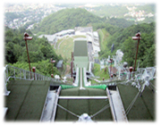

７／１（土）
正式な株式会社ソニックチーム設立第一日目。 朝から二条市場に行って朝ご飯に親子丼を食べた。 さすが北海道！とても美味でした。
朝からなんかいい感じです。
早起きをしたのでイベントまでに時間がもう少しあったので、札幌の時計台に行って 来ました。 １０年位前に車で前を通り過ぎただけだったのだけど、なんか凄く懐かしい気がした。

その後、『ファミ通ＤＣ』のイベントで船水さんとのトークショーをやった。
こういうユーザーの方と身近にお話する機会ってあまり無いのでとてもいい感じでした。 今後もっとこういう機会を増やしていければなと思いました。

トークショーの後、帰りの飛行機までにすこし時間があったので、近くにある大倉山 ジャンプ台を見に行ってきた。 最初ジャンプ台なんか見ても何てこと無いだろうと思っていたんだけど、
行ってみてビックリで、「ウォーーーでかいっ」て言うのが最初の印象。

リフトに乗って上に上がったときに、相沢編集長が「ソニックってこういうところを
駆け下りてるんですね」と。「そっか ソニックってこんな高いところから超高速で 駆け下りてるんだなー」とか思ったりした。 ジャンプ台って初めて見たんだけど、行かれた事が無い方はお勧めだよ。
一度は見てみてね。凄い迫力だよ。 今度はジャンプ競技をやっているときに見に行きたいなー。その大倉山ジャンプ台に『ジャンプシミュレーター』があった。
坂の風洞の中にヘッドマウントディスプレイをつけて入って、ジャンプ競技を体感で きるみたい。 もう少し時間があれば乗れたのにとても残念！
誰か行かれた方、どんな感じだったか教えてね！

帰りに千歳空港のゲームセンターで『わくわくソニックパトカー』を発見！ 僕が関わったわけじゃないけどなんかとても懐かしくって嬉しくなってしまった。
何処かに行った時にソニックを見かけるととても幸せな気分になる。 みなさんはどうですか？
あ、これだけ読むと仕事なのか遊びなのか、わからないねぇ(^^;;
トークショーの模様は7月末発売の『ファミ通ＤＣ』を読んでね！
|